Designing the review form
For event organisersNot an organiser?
Explore the settings and tools that will help you design the review form for your requirements.#
Go to Event dashboard → Abstract Management → Reviews → Forms & Setup.
Skip to:
Changing the order of a question
NB: Some of the features below are not available in the FREE package.
The default Review Form will be displayed.
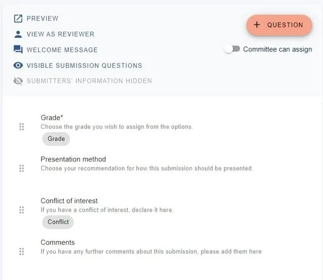
The controls
At the top of the form you will see the following:
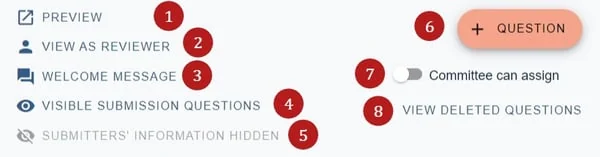
1) Preview the form as it would look to a reviewer.
2) View as a reviewer for a specific reviewer's view (an option will open to choose the reviewer by email).
3) Click Welcome message to add a welcome message or any instructions you wish a reviewer to read before completing the form. Changes are saved automatically.
4) Visible submission questions
Clicking here will reveal the submission questions. Toggle the eye icon on and off to control the visibility for reviewers.
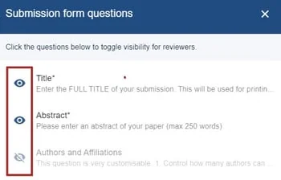
5) Submitters' information Toggle the eye icon to control the visibility of submitters' email and names to reviewers.
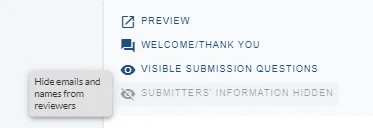
6) See Review question types
7) See Allowing committee members to assign reviews
8) View deleted questions (if you have deleted any)
Default Questions
See Review question types for guidance. 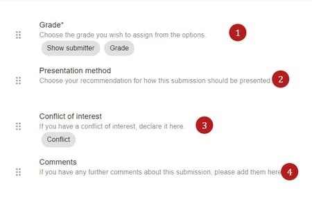
1) Grade - data in this field will be numerical and will allow for calculations - ie average grade etc.
2) Presentation method - This is a dropdown question that will indicate recommendation of presentation method - eg - oral, poster etc
3) Conflict of interest
Entries in this field will show in the reviews table to alert admins to any conflicts. The row will also be highlighted pink - if either a) the submission is incomplete or b) there is a conflict of interest.
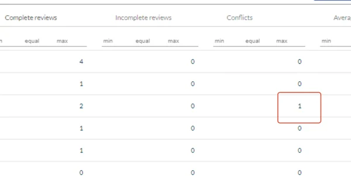
4) Comments - entries in this field will be comments from the reviewer.
Editing the content of a question**
Click on any question to open up the edit review question screen, where you can amend the question text and content. This is the same process as in the submission form.
NB For more information on the functions and types of questions in the review form, see Review question types.
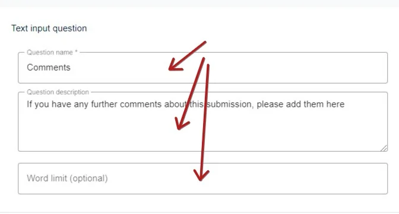
Settings
On relevant questions there are options to mark them as mandatory by ticking
Answer required,
Ticking Is grade question will mean that the system will recognise this as a number and calculate accordingly (eg - average grade etc).
Checking Show response to submitter will allow the response to be shown where you have enabled theShow reviews to submitters feature.
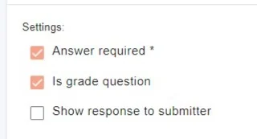
Adding a question - You can add a new question to the review form by clicking +Question then choosing the relevant question type from the list.
See Review question types for more information.
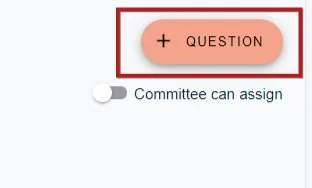
Deleting a question - Click on the relevant question then click Delete Question in the right hand corner of window.
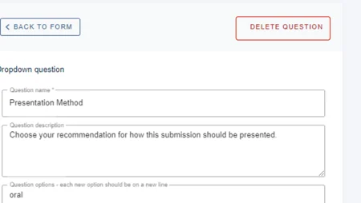
You can restore a deleted question by clicking on View deleted questions,
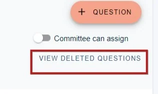
Then clicking on the relevant question.
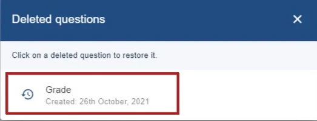
Changing the order of questions - You can drag and drop the questions to change their order
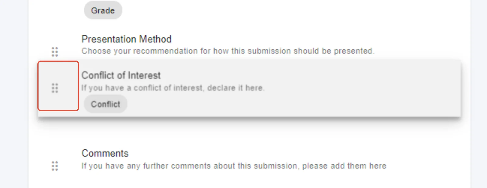
Common questions#
I would like reviewers to make recommendations on whether a submission be accepted or rejected. How do I do that?#
You will need to add a dropdown question to the review form - see review question types.
Didn't solve it? Ask our support team
No question is too small, and there's no charge for asking. Raise a ticket and someone who knows the software will pick it up.
Did this page solve it?
Thanks — this helps us fix it.